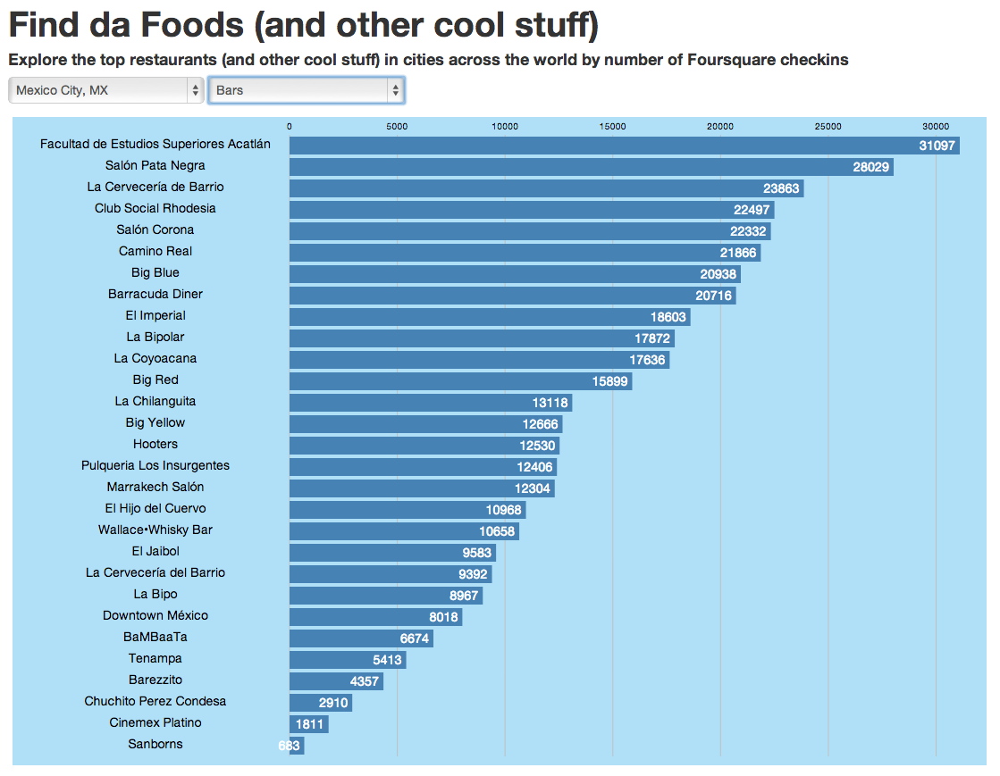

My latest project was my first foray into the Foursquare API and the D3.js JavaScript library. I love traveling and finding interesting places to visit, so I wanted an app that allows users to find out which venues have the most checkins based on a city and category of their choice.

Granulr is group project created during General Assembly's Web Development Immersive program. Built with Javascript, Ruby, and Rails, Granulr facilitates goal setting and achievement through a "user stories" model and allows users to break down large goals into specific, actionable tasks.

Getadilla, my first project, is an online ordering portal for a quesadilla restaurant. The app is built with Rails and incorporates login and authentication, as well as Google Translate functionality.